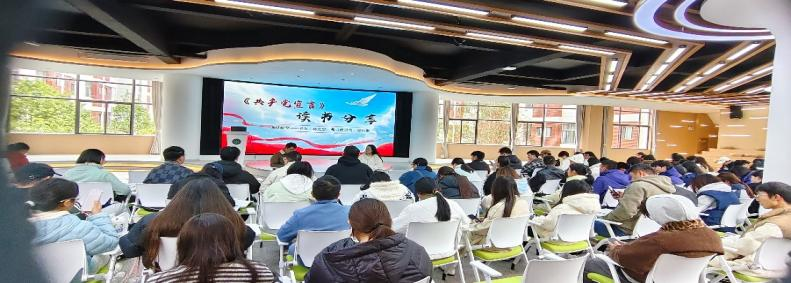
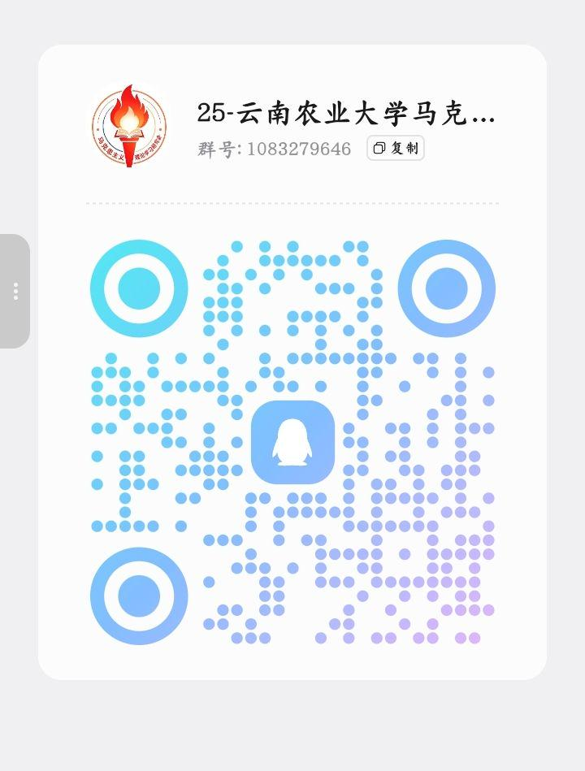

会长
组织管理读书活动，统筹社团日常运行与活动推进，把握社团发展方向。
统筹管理
YNAU MARXISM THEORY STUDY
MARXISM CLASSICS READING ASSOCIATION
品读经典 · 感悟真理 · 传承信仰
我们是谁
党的二十大明确提出，党的百年奋斗充分彰显了马克思主义强大的生命力，坚持理论创新是我们党百年奋斗的宝贵历史经验，马克思主义经典著作更是我党安身立命的理论之源与事业根基。自2023年起，我院常态化开展月度经典读书会，活动延续至今已有三年。
在这三年里，读书会系统组织研读了《共产党宣言》《关于费尔巴哈的提纲》《路德维希·费尔巴哈和德国古典哲学的终结》《保卫马克思》等马克思主义经典篇目，并且同步结合《青年马克思》《红旗渠》等红色影片开展观影研学，以理论研读结合影像学习的多元模式夯实思想根基。长期的常态化学习，逐步凝练出独具我院特色的红色思想建设品牌。
今后，我社将持续优化活动形式，深耕经典文献解读，丰富理论学习载体，推动马克思主义理论真正入脑入心，引导学子把理论学习成果转化为行动力，以专业所长担当时代使命，为建设祖国贡献青年力量。
组织架构
组织管理读书活动，统筹社团日常运行与活动推进，把握社团发展方向。
统筹管理配合开展活动，并做记录，撰写新闻稿，留存社团学习足迹与活动档案。
记录宣传活动剪影
从月度读书会的经典研读，到红色影片的沉浸观影。
每一帧都是真理淬炼与思想生长的生动注脚。
品牌项目
本次研读《共产党宣言》第四篇，为期两年的系列研读活动圆满收官。大家围绕“无产者在这个革命中失去的只是枷锁，他们获得的将是整个世界”等经典论述展开学习。沐浴真理之光，同学们踊跃交流，研讨氛围热烈。
经典研读 · 真理之光 · 圆满收官本次组织观影《红旗渠》，回溯修渠岁月恶劣艰苦的施工环境，感悟党带领人民自力更生、艰苦奋斗的峥嵘历程，其背后是扎根大地、脚踏实地的实干品格。影片极大激励了大家坚定理想信念，传承奋斗精神，勇担时代使命。
红色观影 · 自力更生 · 躬行耕读